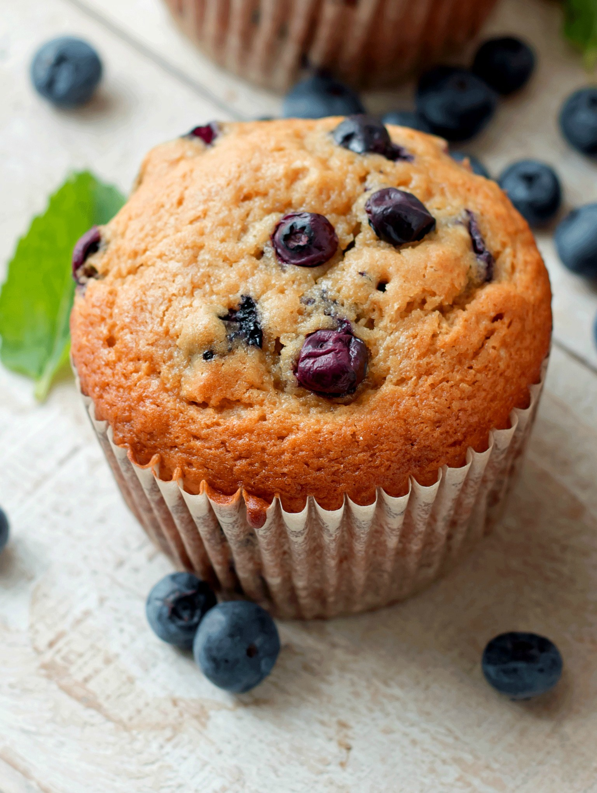

1. Hoogwaardige Ingrediënten: Wij hechten veel waarde aan de kwaliteit van onze ingrediënten. Onze muffins worden gemaakt met de fijnste bloem, verse eieren, pure vanille-extract en andere hoogwaardige componenten. Dit zorgt voor een ongeëvenaarde smaak en textuur.
2. Variëteit aan Smaakcombinaties: Wij bieden een uitgebreide selectie van muffins in verschillende smaakcombinaties. Of je nu houdt van klassieke blueberry muffins, decadente chocolademuffins, frisse citroenmuffins, of andere smaken, wij hebben voor elk wat wils.
3. Aandacht voor Details: Wij besteden bijzondere aandacht aan de details. Onze muffins zijn prachtig gedecoreerd en worden met zorg gepresenteerd, zodat ze er net zo goed uitzien als ze smaken.
4. Kwaliteitscontrole: Elke muffin wordt zorgvuldig gecontroleerd om ervoor te zorgen dat deze aan onze strikte kwaliteitsnormen voldoet. We willen alleen de beste muffins aan onze klanten leveren.
